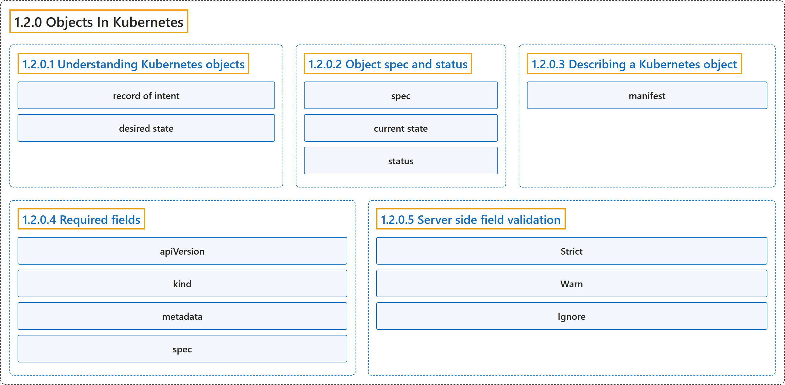

1.2.0 Objects In Kubernetes
Classification

Glossary
| Term | Definition | 中文翻译 | Source |
|---|---|---|---|
| 1.2.0 Objects In Kubernetes Kubernetes 中的对象 |
"Kubernetes objects are persistent entities in the Kubernetes system." | Kubernetes 对象是 Kubernetes 系统中的持久化实体。 | The Kubernetes Authors, n.d., "Objects In Kubernetes", para. 1 |
| 1.2.0.1 Understanding Kubernetes objects 理解 Kubernetes 对象 |
(context) "Kubernetes uses these entities to represent the state of your cluster." | （语境）Kubernetes 用这些实体来表示集群的状态。 | The Kubernetes Authors, n.d., "Objects In Kubernetes", para. 1 |
| record of intent 意图记录 |
"A Kubernetes object is a "record of intent"--once you create the object, the Kubernetes system will constantly work to ensure that the object exists." | Kubernetes 对象是一份“意图记录”：一旦你创建了对象，Kubernetes 系统就会持续工作，确保该对象存在。 | The Kubernetes Authors, n.d., "Understanding Kubernetes objects", para. 5 |
| desired state 期望状态 |
"By creating an object, you're effectively telling the Kubernetes system what you want your cluster's workload to look like; this is your cluster's desired state." | 通过创建对象，你实际上是在告诉 Kubernetes 系统你希望集群的工作负载是什么样子；这就是集群的期望状态。 | The Kubernetes Authors, n.d., "Understanding Kubernetes objects", para. 5 |
| 1.2.0.2 Object spec and status 对象的规约与状态 |
"Almost every Kubernetes object includes two nested object fields that govern the object's configuration: the object spec and the object status." |
几乎每个 Kubernetes 对象都包含两个嵌套的对象字段，它们控制对象的配置：对象 spec 和对象 status。 |
The Kubernetes Authors, n.d., "Object spec and status", para. 1 |
| spec 规约 |
"For objects that have a spec, you have to set this when you create the object, providing a description of the characteristics you want the resource to have: its desired state." |
对于有 spec 的对象，你必须在创建对象时设置它，用来描述你希望资源具备的特征，也就是它的期望状态。 |
The Kubernetes Authors, n.d., "Object spec and status", para. 1 |
| current state 当前状态 |
"The status describes the current state of the object, supplied and updated by the Kubernetes system and its components." |
status 描述对象的当前状态，由 Kubernetes 系统及其组件提供和更新。 |
The Kubernetes Authors, n.d., "Object spec and status", para. 2 |
| status 状态 |
"The status describes the current state of the object, supplied and updated by the Kubernetes system and its components." |
status 描述对象的当前状态，由 Kubernetes 系统及其组件提供和更新。 |
The Kubernetes Authors, n.d., "Object spec and status", para. 2 |
| 1.2.0.3 Describing a Kubernetes object 描述 Kubernetes 对象 |
(context) "When you create an object in Kubernetes, you must provide the object spec that describes its desired state, as well as some basic information about the object (such as a name)." | （语境）在 Kubernetes 中创建对象时，你必须提供对象规约，它描述其期望状态，以及对象的一些基本信息（例如名称）。 | The Kubernetes Authors, n.d., "Describing a Kubernetes object", para. 1 |
| manifest 清单 |
(context) "Most often, you provide the information to kubectl in a file known as a manifest." |
（语境）最常见的做法是，你把这些信息提供给 kubectl，放在一个称为清单的文件中。 |
The Kubernetes Authors, n.d., "Describing a Kubernetes object", para. 1 |
| 1.2.0.4 Required fields 必需字段 |
(context) "In the manifest (YAML or JSON file) for the Kubernetes object you want to create, you'll need to set values for the following fields:" | （语境）在你要创建的 Kubernetes 对象的清单（YAML 或 JSON 文件）中，你需要为以下字段设置值： | The Kubernetes Authors, n.d., "Required fields", para. 1 |
| apiVersion apiVersion |
"apiVersion - Which version of the Kubernetes API you're using to create this object" |
apiVersion：Kubernetes API 的哪个版本，你用它来创建此对象 |
The Kubernetes Authors, n.d., "Required fields", para. 2 |
| kind kind |
"kind - What kind of object you want to create" |
kind：你想创建的对象类型 |
The Kubernetes Authors, n.d., "Required fields", para. 3 |
| metadata metadata |
"metadata - Data that helps uniquely identify the object, including a name string, UID, and optional namespace" |
metadata：帮助唯一标识对象的数据，包括 name 字符串、UID 和可选的 namespace |
The Kubernetes Authors, n.d., "Required fields", para. 4 |
| spec spec |
"spec - What state you desire for the object" |
spec：何种状态，是你对该对象的期望 |
The Kubernetes Authors, n.d., "Required fields", para. 5 |
| 1.2.0.5 Server side field validation 服务器端字段校验 |
"Starting with Kubernetes v1.25, the API server offers server side field validation that detects unrecognized or duplicate fields in an object." | 从 Kubernetes v1.25 开始，API 服务器提供服务器端字段校验，检测对象中无法识别或重复的字段。 | The Kubernetes Authors, n.d., "Server side field validation", para. 1 |
| Strict Strict |
"Strict field validation, errors on validation failure" | 严格的字段校验，校验失败时报错 | The Kubernetes Authors, n.d., "Server side field validation", para. 4 |
| Warn Warn |
"Field validation is performed, but errors are exposed as warnings rather than failing the request" | 执行字段校验，但错误以警告形式暴露，而不会让请求失败 | The Kubernetes Authors, n.d., "Server side field validation", para. 6 |
| Ignore Ignore |
"No server side field validation is performed" | 不执行服务器端字段校验 | The Kubernetes Authors, n.d., "Server side field validation", para. 8 |
References
The Kubernetes Authors. (n.d.). Objects In Kubernetes. Kubernetes Documentation. Retrieved October 31, 2026, from https://kubernetes.io/docs/concepts/overview/working-with-objects/